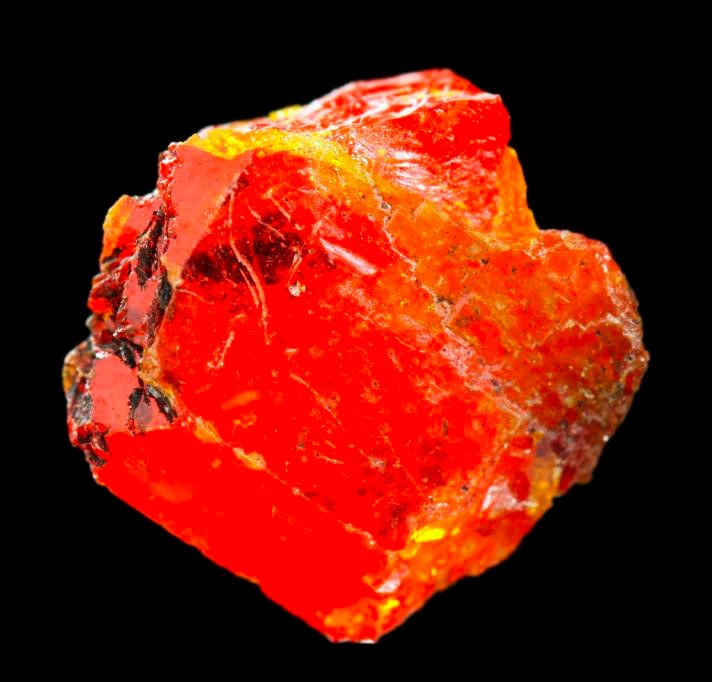

Сиборгий
Сибо́ргий (лат. Seaborgium, обозначается символом Sg, ранее был известен как эка-вольфрам и под временным систематическим названием уннилгéксий (лат. Unnilhexium) и обозначением Unh) — элемент 6-й группы (в старой терминологии — побочной подгруппы VI группы) 7-го периода периодической системы элементов с атомным номером 106; короткоживущий радиоактивный элемент.

Изотопы сиборгия впервые получены в 1974 г.: 260Sg при облучении мишени из 207Pb и 208Pb ускоренными ионами 54Cr (Г. Н. Флёров, Ю. Ц. Оганесян c сотрудниками, Дубна), 263Sg в реакции 249Cf с 18О (А. Гиорсо с сотрудниками, Беркли). Название «Сиборгий» утверждено ИЮПАК в 1997 г. (вместо рекомендованного в 1994 названия «резерфордий»).
Изотопы Сиборгия также имеют важное применение в науке и медицине. Например, Сиборгий-122 используется для производства радиоактивных источников, которые используются в медицинских аппаратах, таких как гамма-ножи и ускорители лучей. Сиборгий-123 используется в ядерной медицине для диагностики заболеваний щитовидной железы.